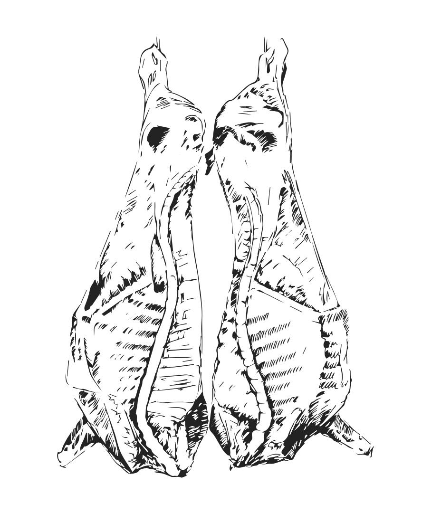

Soy farming is destroying the environment
You are worried about the environmental impact of soy farming, but do you think you will give up animal products, as they are the main reason for the destructive elements of soy farming?
Now undoubtedly the environmental impact and destruction caused by soy is massive, but we need only consider that 85% of the soy that is grown is fed to livestock animals.
27 This pretty much dispatches the argument immediately as we can sustainably produce enough soy for human consumption - the issue surrounding soy farming is that such vast quantities are produced to feed livestock animals, which is why it’s bad for the environment.
→
Basically there is no such thing as an animal eating environmentalist
28 or a vegetarian environmentalist
29 for that matter. If you care about the environment then you have to be a vegan, it’s that simple.
→
People expect governments and corporations to be the ones leading the change when it comes to the environment and it becomes incredibly easy to point the finger at businesses that exploit the environment and blame them for all the issues we are currently facing, rather than looking at our own actions and assessing whether or not we are doing everything we can as individuals.
As individuals we have the power to make all the difference and we can’t expect politicians and CEOs to implement real change. As consumers, it's up to us to lead the change. It’s hypocritical of us to demand change if we aren’t willing to make simple changes ourselves.
→
Content copy adapted from "30 Non-Vegan Excuses & How To Respond To Them" by Earthling Ed

The web was meant to be read, not squished.